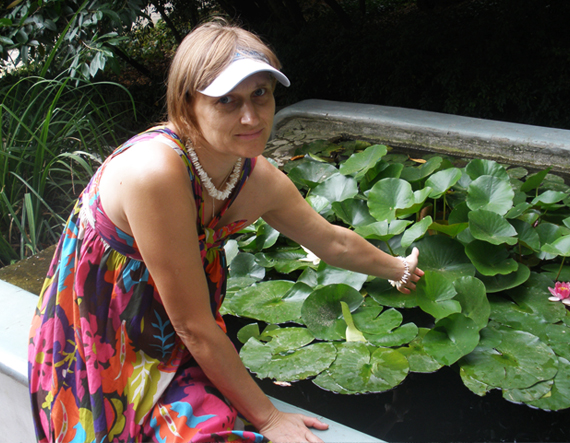

ОБО МНЕ
Выбор профессии – очень сложный и важный шаг. В далеком 1987 году, стоя на пороге школы, этот шаг должна была сделать и я. Родители давали разные советы, папа настаивал на получении профессии экономиста, приводил для этого очень весомые аргументы. Но почему – то первый раз в жизни не хотелось прислушаться к такому дорогому для меня его мнению. Окончательно помогла сделать выбор мой учитель математики – Педагог, которого невозможно было не любить, на которую и сейчас хочется быть похожей Савинкова Любовь Федосеевна. То, что урок математики у меня был один из любимых, это я и так всегда понимала. Но именно с «легкой руки» Любови Федосеевны, после разговора с ней о будущем, я, не раздумывая, отнесла документы в пединститут. Получив на профильном экзамене желанные 5 баллов, подтвердив таким образом свою медаль, я сразу стала студенткой отделения «Математика и информатика».
И ни разу об этом не пожалела. Уже потом пришло осознание того, что я не хотела расставаться со школой. Мои школьные годы действительно были замечательными. Я благодарна школе, учителям, моим одноклассникам за годы, проведенные в стенах родной «двадцатки», за уроки, общение, за наши праздники и мероприятия. Как тогда мы пели в песне:
Хотя мы молоды, нам есть, что вспоминать:
Походы пыльные, колхозные рассветы.
Быть может, лучше школы есть, но это - где–то,
Но лишь «двадцатая» смогла нам это дать.
Подсознательно хотелось продлить школьные годы. И, конечно, как нельзя лучше это можно сделать, работая учителем. Вспоминаю первый год работы. Как хотелось, чтобы все ученики моего тогда единственного 5 – Б класса научились от меня всему, что сама знала и умела. Помню, как дрожали от волнения руки, когда открывала странички их первых контрольных работ, в предвкушении, что вот сейчас увижу первые результаты нашего совместного труда. Потом пришло осознание того, что именно труд – совместный, что большой минус в профессии учителя в том, что результат зависит не только от твоего желания и старания. Может быть даже в большей степени от того, насколько желает и готов принять твои знания и умения ученик. Я очень благодарна коллегам, наставникам, которые у меня, как молодого специалиста, были в школе № 20 г. Красный Луч. Я всегда всем говорю, что я прошла «школу профессии» в те годы под руководством директора Аллы Александровны Зимы, с постоянной помощью Кривосинной Лидии Александровны и Романенко Галины Дмитриевны. Я благодарна выпускникам моего выпускного 11 класса и их родителям за наш дружный сплоченный коллектив. Такого класса больше в моей педагогической жизни не было. Пересматривая фотографии тех лет, я вспоминаю каждое наше мероприятие каждого ученика. Я горжусь тем, что была рядом с ними, что смогла их чему – то научить, научиться многому у них. Очень приятно было услышать спустя несколько лет слова от «когда – то ученицы, а теперь коллеги», что она в школе, мечтая стать учителем, хотела быть похожей на меня. Лучшего признания учителю и не нужно. Я очень благодарна Любаше Титенко за эти слова. Они дорогого стоят.
Вот так и проходит день за днем: за проверкой тетрадей, за подготовкой к урокам, за радостями от успехов и огорчениями от плохих оценок учеников. И пусть руки уже не дрожат от нетерпения увидеть знания в контрольных работах ребят, все же как приятно, когда после урока подходит к тебе Рома Калинюк и говорит: «Спасибо вам, Алла Ивановна, за урок, мне было очень интересно.». Или когда пятиклассники дарят к празднику открытку, изготовленную своими маленькими пальчиками, и в ней слова благодарности за твои уроки. Я очень благодарна Богу за такую судьбу «учителя». Но на первом месте в моей жизни - это мои самые главные ученики, мои самые большие надежды и волнения – мои дети - сыночек и дочечки. Но это уже другая страничка жизни.
ОБРАЗОВАНИЕ
- – прошла обучение по программе для учителей информатики, математики, физики по теме «Введение нового стандарта в учебно – воспитательный процесс в основной и старшей школе» при ГУ «Научно – методический центр развития образования г. Луганск»;
- – повышение квалификации учителей математики при Луганском областном институте последипломного педагогического образования;
- – Луганский национальный педагогический университет имени Т. Г. Шевченко, отделение дополнительный профессий по курсу «Изучение современный компьютерных технологий»;
- – Луганский государственный педагогический институт. Диплом с отличием, присвоение квалификации и звания учителя математики, информатики и вычислительной техники;
- – закончила полный курс средней общеобразовательной трудовой политехнической школы № 20 им. А. Я. Пархоменко г. Ворошиловграда. За успехи в учении, труде и за примерное поведение награждена серебрянной медалью;
ОПЫТ РАБОТЫ
- - учитель математики ГУ «Луганская школа № 31».2013 год аттестация на соответствие занимаемой должности и соответствие ранее присвоенной категории «специалист І категории». С 2015 года - учитель математики в ЛУВО «Академия детства» по совместительству;
- – учитель математики в частной общеобразовательной школе І – ІІІ ступеней «Альфа». Аттестация в 2004 году на соответствие занимаемой должности и присвоение квалификационной категории «специалист І категории»;
- – учитель математики и информатики в средней общеобразовательной школе № 20 г. Красный Луч Луганской области. Аттестация на соответствие занимаемой должности и присвоение квалификационной категории «специалист ІІ категории»;